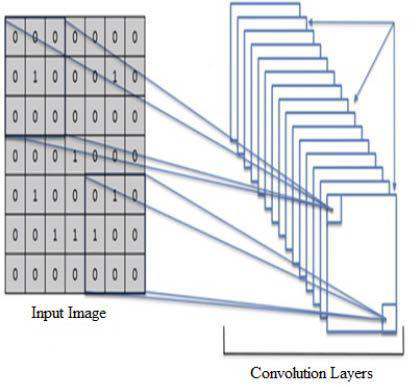
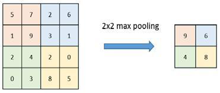
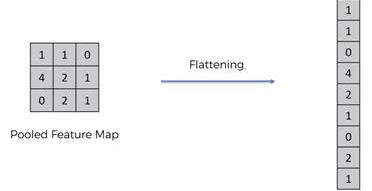
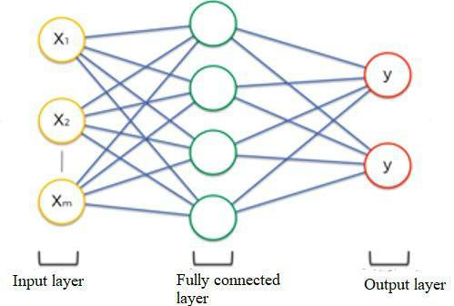

AI-Based Animal Identification & Adoption App
By
Our Goal
Our goal is to develop a universal animal recognition to increase the knowledge about the global biodiversity
Motivation
- To adopt a pet is not an easy decision.
- Many people are afraid to adopt a pet because they do not want to take care of them.
Advantages of having a Pet
- Goodbye to Loneliness/Isolation
- Boost your Self-esteem
- Lower your Stress Levels
- Improve your Physical & Psychological Health
- With Great Pets, Comes Great Responsibility!
- You'll be Saving a Life
“Saving one dog will not change the world, but surely for that one dog, the world will change forever.”
- Karen Devison
Learn more about animals.
Awe! That's a cute little dog.
Problem Statement
Of the approximately 7.6 million companion animals entering animal shelters nationwide every year, approximately 2.7 million are euthanized. The number of euthanized animals could be reduced dramatically if more people adopted pets instead of buying them.
To save animals from cruelty a Prevention of Cruelty to Animals Act was passed in 1960, however there were no strict laws in that act as animals could be used for lab experiments and entertainment.
Besides all this, animals on the streets are harassed by people by throwing stones just for entertainment. The numbers of stray animals have increased gradually over the years as people abandon their pets.
Though there are many kind hearted people put still a platform is required where people come to know the sufferings of stray animals.
Literature Survey
Bird Species Identification Using Image Mining & CNN Algorithm 2020
Saundarya Junjur
Punam Avhad
Deepika Tendulkar
The methodology uses the Caltech-UCSD Birds two hundred [CUB-200-2011] dataset for coaching likewise as testing purpose. By exploitation deep-convolutional neural network (DCNN) algorithmic rule a picture regenerate into gray scale format to get autograph by tensor flow, wherever the multiple nodes of comparison area unit generated. Once analyzing the score sheet it will predicate the specified bird species by exploitation highest score. The system accurately predicts the bird name beside extended info of that specific bird.
JSP-Based Pet Adoption System 2019
Haoran Liu
Xiue Meng
In recent years, the pace of people's
life has accelerated, resulting in an
increase in the number of abandoned
pets. More and more displaced animals
have not only affected the animals of
nature, but also the lives of human
beings. The adoption of animals raises
the awareness of people to care for
animals, thus reducing the occurrence of
unscrupulous pet owners. Pet adoption
can also help children develop an
awareness of protecting animals and
nature.
Animal identification 2018
Jayati Bodkhe
Harshita Dighe
Aparna Gupta
Litesh Bopche
This paper contributes and illustrates the different methods of animal identification focusing on radio frequency identification and how it works. RFID tags transmit animal identification information using radio waves. It is one of the three pillars of trace ability, along with premises identification and movement, and is increasingly important in livestock management.
| Title | Year | Author |
|---|---|---|
| Bird Species Identification Using Image Mining & CNN Algorithm | 2020 |
Saundarya Junjur Punam Avhad Deepika Tendulkar |
| JSP-Based Pet Adoption System | 2019 |
Haoran Liu Xiue Meng |
| Individual Cattle Identification Using a Deep Learning-Based Framework | 2019 |
Yongliang Qiao Daobilige Su He Kong Salah Sukkarieh Sabrina Lomax Cameron Clark |
| Title | Year | Author |
|---|---|---|
| Scrutiny of Methods for Image Detection and Recognition of Different Species of Animals | 2019 |
Elham Mohammed Thabit A. ALSADI Nidhal K. El Abbadi |
| Animal Identification | 2018 |
Jayati Bodkhe Harshita Dighe Aparna Gupta Litesh Bopche |
Proposed System
System Architecture
The image recognition algorithm (image classifier) takes the image (or a patch of the image) as input and outputs what the image contains. In other words, the output is a class label (fox, wolf, bear etc.).

The animal recognition and classification system
Animal Recognition System
- Pre-processing Block
- Feature Extension Block
- Classification
Modules
- Training Dataset
- Capturing Image
- Image Analysis
- Classification
- Identification
Algorithms
- Image Capturing System
- Image Processing System
- Convolutional Neural Network

Classification Process
Architecture of CNN for Animal Detection


CNN is mainly constructed by using following layers:
- Convolutional Layer
- Pooling Layer
- Flattening Layer
- Fully Connected Layer
Convolutional Layer
- First layer of CNN.
- Made of learnable filters placed spatially along width and height of input layer.
Pooling Layer
Helpful to decrease the quantity of parameters when the size of image is huge.
Flattening Layer
Procedure for converting the two dimensional array set into a single, long continuous linear vector.
Fully-Connected Layer
- Specific type of hidden layer which must be used within the CNN.
- Combines features into attributes that predicts output more accurately.
Alternative Algorithms
K-Nearest
- Simple & supervised Algorithm.
- Used to solve classification and regression problems.
- Easy to implement & understand.
- Drawback: Slows down as the size of the data increases.
Amazon's A9
- Developed by Amazon.
- Used to decide the ranking of the products.
Mathematical Module
Advantages
- Shares Knowledge
- Saves Costs of Medical Tests
- Saves a life
Disadvantages
- Need large number of sample data for getting more accurate results
- Results can never be 100% accurate
Applications
- Sharing Knowledge with people
- Animal Identification in Zoos & Forests
- Plant Identification
- Fruits & Vegetable Identification
Conclusion
The prototype of our Pet Adoption Application was developed successfully. The major objectives covered by our application are as follows:-
- People will come to know about stray animals that need their help around their vicinity.
- The number of stray animals euthanized will be reduced.
- Kind hearted people will get an opportunity to do something for helpless animals.
- People will be able to share their stories of how they rescued pets and motivate others to do so.
References
- A research on Animal adoption by Research Gate
- Prevention of cruelty to animals Act 1960 Prevention of Cruelty to Animal, Wikipedia
- Bird Identification by Image Recognition. Madhuri A. Tayal, Atharva Mangrulkar, Purvashree Waldey, Chitra Dangra, 2018.
- Bird Species Identification using Deep Learning. Prof. Pralhad Gavali, Ms. Prachi Abhijeet Mhetre, Ms. Neha Chandrakhant Patil, April-2019.
- Large-Scale Bird Sound Classification using Convolutional Neural Networks Stefan Kahl, Thomas Wilhelm-Stein, Hussein Hussein, Holger Klinck, Danny Kowerko, Marc Ritter, and Maximilian Eibl